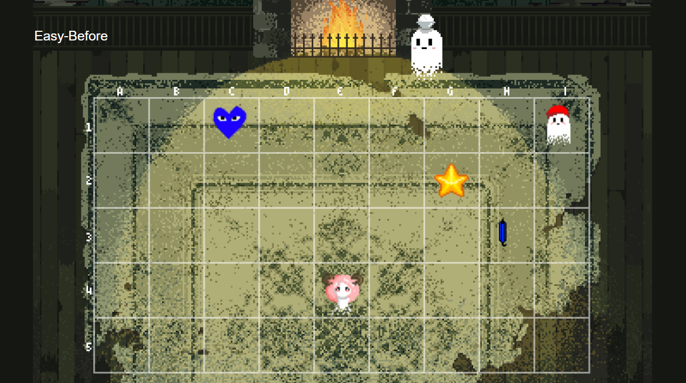
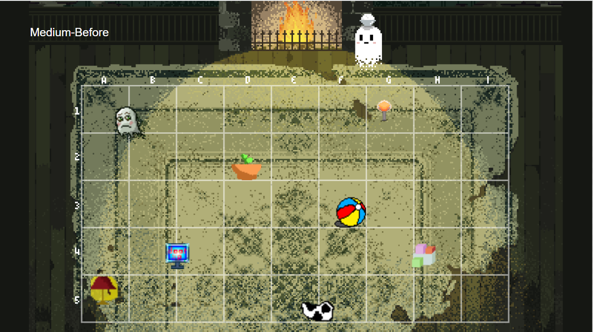
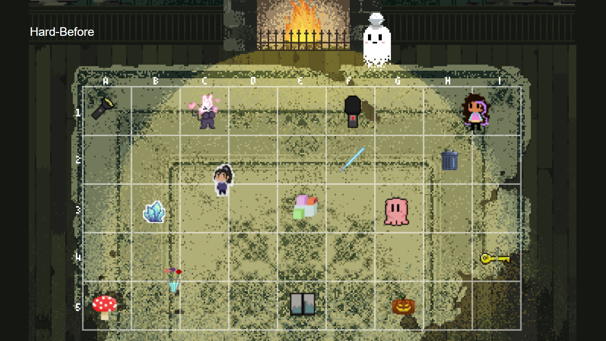

Instructions
1. Start the Game: Click the "Start Game" button to begin the game.
2. View the Images:
You will see two similar images side by side. Examine them closely to identify the subtle differences.
3. Spot the Differences:
Tap or click on the areas where you spot differences between the two images. Pay attention to details like colors, shapes, and objects.
4. Interactive Elements:
Use the interactive elements provided to mark the spots where you find differences. The game may have features like tapping, dragging, or clicking.
5. Scoring:
Earn points for each correct identification. Some games may have a scoring system based on accuracy and speed.
6. Time Limit (if applicable):
If there's a time limit, complete the game within the specified timeframe for an additional challenge. If you run out of time, you lose the game.
7. Level Progression:
If the game has multiple levels, progress through them by successfully finding differences. Each level may introduce new images with increasing difficulty.
8. Rewards:
Earn rewards for completing the game successfully. Rewards could include points, stars, or other in-game incentives.
9. Restart or Quit:
If you want to play again, restart the game. If you're finished, exit the game or return to the main menu.
Easy Spot the Difference Level

Medium Spot the Difference Level Teh

Hard Spot the Difference Level
